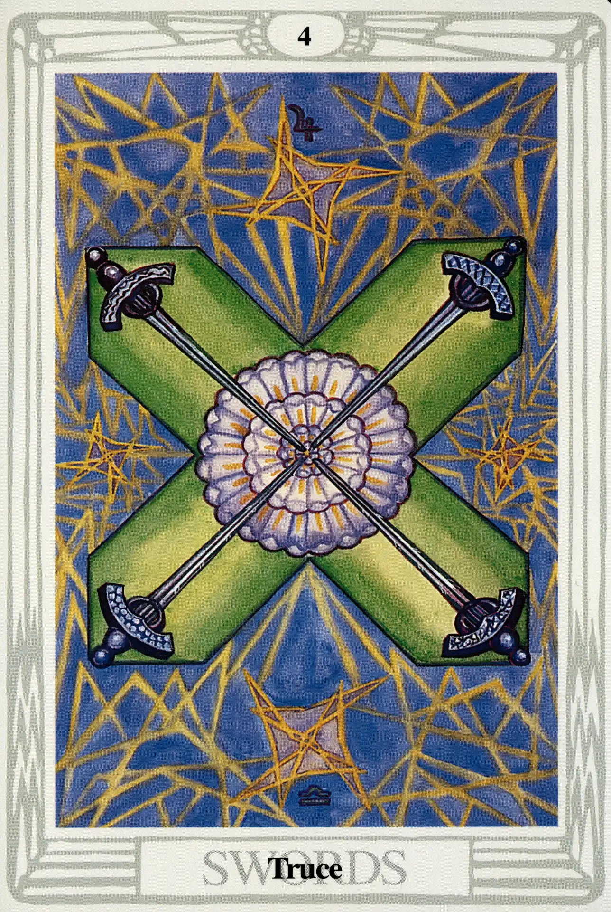

Swords
Four of Swords
Truce

(Jupiter in Libra)
20° to 30° Libra
October 13 to October 22
Original Title: Lord of Rest from Strife.
Golden Dawn Model: The Four of Swords is exactly like the Two of Swords (including the rose of five petals and the white rays), except the hands that appear from clouds at the right and left hold two swords each.
Prince Scale for Chesed: Deep Purple.
The Four Scales for Jupiter: Violet; Blue; rich Purple; Bright Blue, rayed Yellow.
The Four Scales for Libra: Emerald Green; Blue; Deep Blue-Green; Pale Green.
Formula: 4 (Chesed) of Swords (Yetzirah) +Jupiter in Libra = TRUCE
The Four of Swords is perhaps the most beautiful of the small-card Swords. Harris executes a textbook use of the color scales and offers us a portrait of balance and order. She writes to Crowley: “I think it would be a good plan if you could arrange to come here one day next week & see the Swords. I have a superstitious horror of bringing them all unbalanced to London.
Chesed is the sphere of Jupiter and serves as a gracious but authoritative host to Jupiter in Libra. Equilibrium and justice are definitely key words for this card, but Crowley tells us that it also brings with it the “establishment of dogma, and the law concerning it.” Swords are weapons, and weapons discharge their design by virtue of the disciplines of war, not of peace. The kind of “truce” the Four of Swords monitors is a peace enforced by the threat of violence, and as such will be short lived.
The four swords are arranged as a St. Andrew's cross, suggesting to Crowley “Fixation and rigidity.” Their points meet at the center of a large rose of forty-nine petals that Crowley tells us represents “social harmony.” It is the concord of conformity and compromise, however, that characterizes a culture that would rather blindly surrender to authority than to face the challenges of liberty.